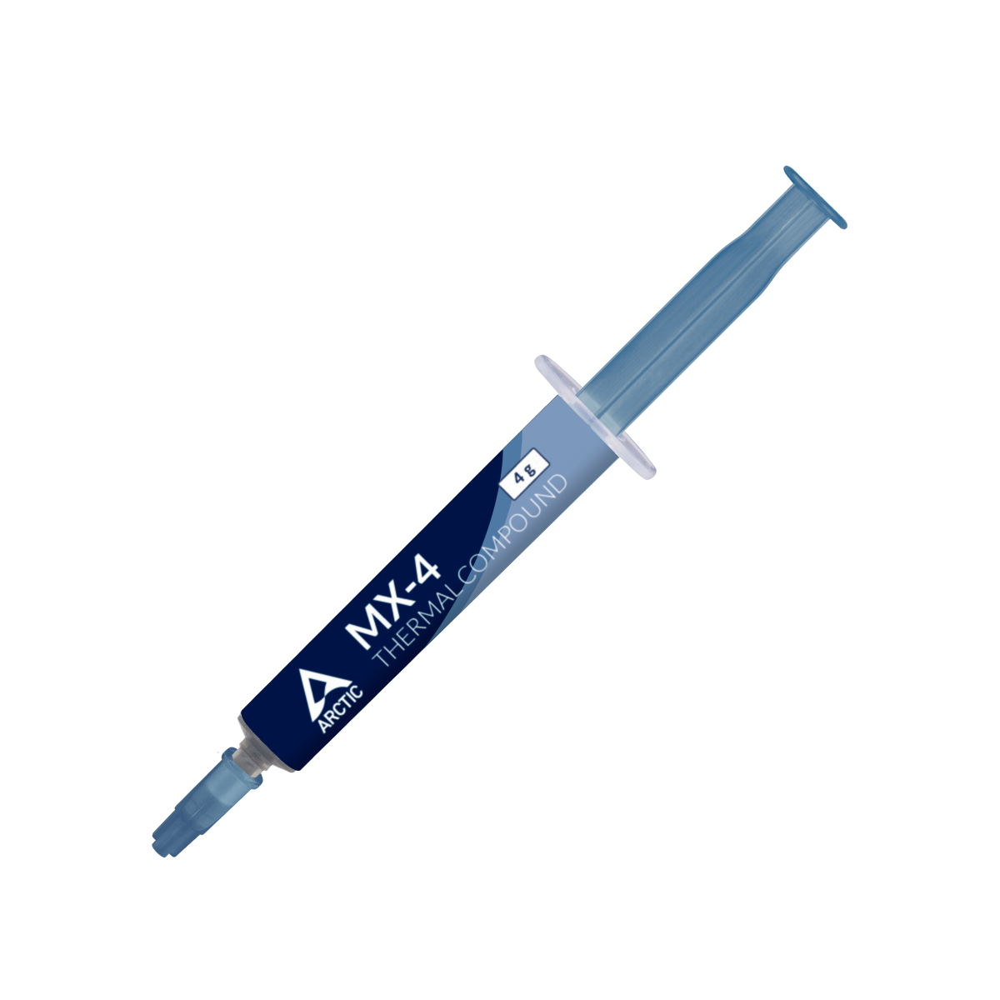

Arctic MX-4
La pasta carbono más vendida del mercado
TipoCompuesto carbono, no conductivo
Vida útilHasta 8 años (declarado por Arctic)
Facilidad de aplicaciónAlta — viscosidad media, no escurre
AplicaciónCPU/GPU oficina, gaming entry/medio
Por qué elegirla
- Estándar mundial para uso general — confiable y reconocida en toda la industria
- Excelente costo por gramo en presentaciones grandes (20g, 45g) para talleres
- La presentación con espátula incluida deja todo listo para una aplicación limpia
Para otros usos considera
- Si haces overclocking o refrigeración líquida custom → MX-6, MX-7 o TG Kryonaut
- Si buscas lo último de Arctic → MX-7
Presentaciones disponibles
| SKU | Gramaje | Incluye |
|---|---|---|
| ACTCP00002B | 4 g | Solo pasta |
| ACTCP00031B | 4 g | Pasta + espátula |
| ACTCP00008B | 8 g | Solo pasta |
| ACTCP00059A | 8 g | Pasta + espátula |
| ACTCP00001B | 20 g | Solo pasta |
| ACTCP00024A | 45 g | Solo pasta |
Aplicaciones típicas
Taller de reparaciónAplica decenas de veces al mes — presentación 20g o 45g
Armado de PC nuevo4g con espátula deja todo listo para la instalación
Mantenimiento corporativo45g compartida entre técnicos para flota de equipos
Cliente final / DIY4g con espátula para una sola PC
Procesadores y equipos típicos
- Intel mainstream: Core i3-12100 / i5-12400 / i5-13400 / i5-14400 / i7-13700 / i7-14700
- AMD mainstream: Ryzen 5 5600X / 7600X / 9600X · Ryzen 7 5700X / 7700X
- GPUs: RTX 3050 / 3060 / 4060 · RX 6600 / 6700 / 7600
- Equipos: PCs gaming entry y medio, oficina, mantenimiento de flota corporativa
Qué temperatura esperar
| Estado | Temp. típica |
|---|---|
| Reposo (idle) | 30 a 40 °C |
| Gaming sostenido | 60 a 75 °C |
| Carga máxima (render, Cinebench) | 70 a 85 °C |
Mejora aproximada vs pasta de bajo costo: 3 a 5 °C menos bajo carga.